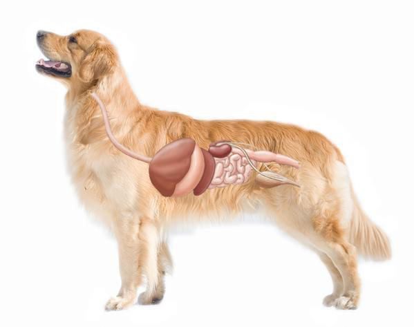
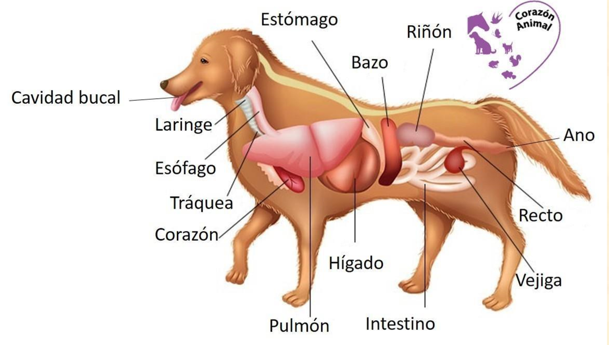
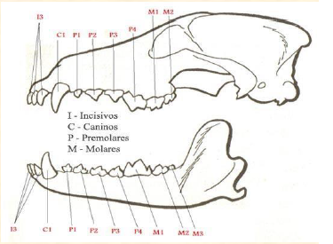
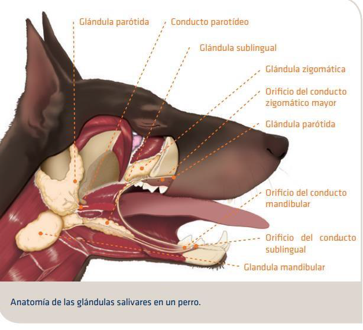
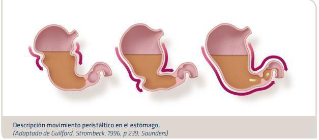
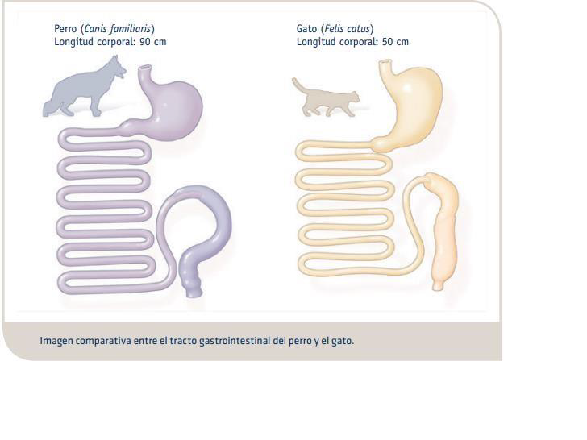
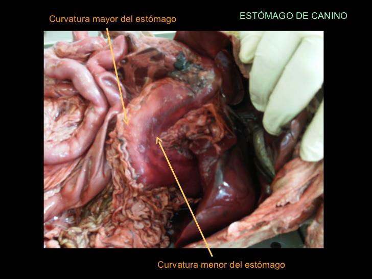
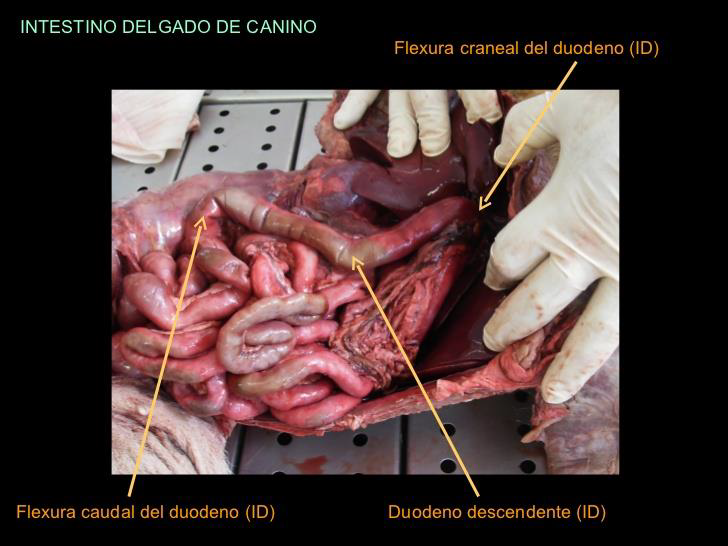
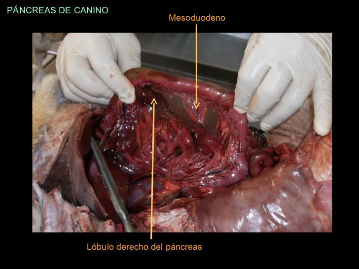
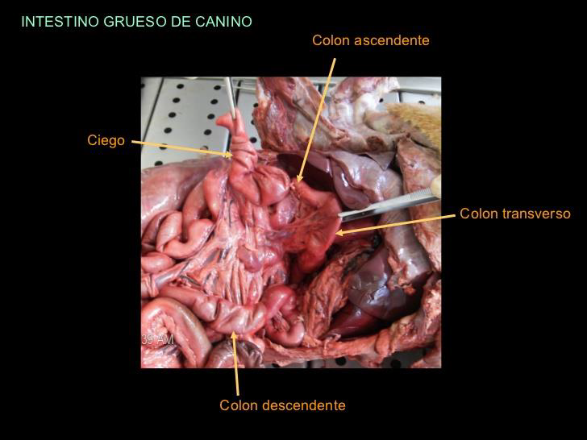

BENEMÉRITA UNIVERSIDAD AUTÓNOMA DE PUEBLA
FACULTAD DE MEDICINA VETERINARIA Y ZOOTECNIA
SISTEMA DIGESTIVO EN CANINOS
ESTRUCTURA Y FUNCIONES BÁSICAS
BOCA
El tamaño y forma de la boca varía considerablemente en las diferentes razas de perros, la cavidad suele ser larga y estrecha en unos y corta y ancha en otros. Los labios son delgados, móviles y presentan numerosos pelos táctiles. La muscosa por lo general, está pigmentada y forma la frenula labiorum. Las glándulas labiales son pequeñas y están muy dispersas
CARRILLOS
Son amplios y la mucosa que los recubre es lisa y más o menos pigmentada.
PALADAR DURO
Está formado por los huesos palatino, maxilar e incisivo; es más ancho que el cuarto par de dientes de la mejilla.
LENGUA
Es ancha y delgada, en dirección rostral y gruesa caudal, es muy móvil. No está pigmentada, pero tiene un color rojo brillante.
DIENTES
✓ Dientes incisivos
✓ Caninos
✓ Molares
GLÁNDULAS SALIVARES
✓ Glándula perótida: es pequeña e irregularmente triangular; su extremo dorsal es ancho y está divido en dos partes; el extremo ventral es pequeño y se solapa con la glándula mandibular.
✓ Glándula mandibular: es más grande que la parótida (5cm de longitud y 3 cm de ancho).
✓ Glándula sublingual: tiene una coloración y se divide en dos partes, la parte caudal y la parte rostral o Glándula cigomática: situada en la parte rostral de la fosa pterigopalatina.
FARINGE
Es larga, pertenece a los tractos digestivo y respiratorio; su parte rostral se une a la boca y a la cavidad nasal, mientras que caudalmente continúa por el esófago.
PALADAR BLANDO
Particularmente largo en los carnívoros, es grueso, excepto en sus bordes. En estado de reposo está en contacto con la epiglotis.
ESÓFAGO
Es relativamente ancho y dilatable; el tejido muscular es estriado y está formado principalmente, por dos capas de fibras espirales que se cruzan entre sí.
ESTÓMAGO
Es relativamente grande, su capacidad, en un perro de tamaño medio, es unos 2.4L; la superficie parietal de todo el estómago es muy extensa, fuertemente convexa.
INTESTINO DELGADO
Tiene una longitud aproximada de 4m, ocupa la mayor parte de la cavidad abdominal, caudal al hígado y al estómago.
DUODENO
Es la porción más corta en el píloro y pasa caudal y ligeramente dorsal, al principio sobre la superficie visceral del hígado.
YEYUNO
Es la Proción mayor del intestino delgado; su mesenterio, ancho y largo, forma la raíz mesentérica craneal en la pared abdominal dorsal.
ILEON
Pasa cranealmente a la región sublumbar, a lo largo de la superficie medial del ciego.
INTESTINO GRUESO
Mide aproximadamente 60 a 75 cm de longitud.
CIEGO
Mide unos 12.5 a 15cm de longitud y es flexuoso.
COLÓN
Está unido a la región sublumbar por el mesenterio.
RECTO Y ANO
El resto está casi cubierto por el peritoneo y la línea de reflexión peritonal. En la unión de recto y ano la mucosa tiene un epitelio escamoso estratificado y contiene glándulas anales.
PANCREAS
Tiene forma de V, está formado por 2 lóbulos largos y estrechos que se hallan en el ángulo agudo, caudal al píloro.
HÍGADO
Es relativamente grande, se divide en 5 lóbulos principales.
VESÍCULA
Asienta en la fosa vesicae felleae, entre las dos partes del lóbulo medio derecho; usualmente no alcanza el borde ventral del hígado.
FIGURA 1

FIGURA 2
LA DEGLUCIÓN
El reflejo de deglutir la comida es complejo porque en él participan los músculos de la lengua y la cabeza, la faringe y el esófago. Una vez formado, el bolo alimentario se desplaza hacia la orofaringe, donde se originan las contracciones faríngeas que hacen que el bolo se desplace a la laringofaringe. El orificio situado entre la orofaringe y la nasofaringe se cierra de forma refleja al elevar el velo del paladar y al cerrar los pliegues palatofaríngeos. La obertura traqueal está protegida por el cerramiento de la glotis y el movimiento de la epiglotis, que impide que los alimentos pasen a la tráquea. Los alimentos de tipo sólido estimulan los receptores faríngeos de una forma más eficaz que los líquidos. El aceite no estimula la deglución, por lo tanto el aceite mineral que se administra de forma oral suele ser aspirado a la tráquea.
El movimiento peristáltico que se inicia en la faringe sigue en el esófago a través del esfínter gastroesofágico, principal movimiento peristáltico de deglución. Si los alimentos o los líquidos no llegan al estómago con este movimiento, se genera un segundo movimiento peristáltico gracias a la presencia de la distensión esofágica de los alimentos. En el perro, la velocidad de deglución de los líquidos oscila entre los 80 y los 100 cm3 por segundo, mientras que en el gato es de sólo 1 a 2 cm por segundo..
FIGURA 3

El esófago del perro contiene dos músculos oblicuos estriados que lo recorren en toda su longitud. En el caso del gato, la túnica muscular consiste en un músculo estriado, pero la sección abdominal y torácica caudal contiene una cantidad cada vez más elevada de músculo liso, hasta los últimos 2 o 3 cm del esófago, que es sólo músculo liso. Tal vez este hecho explique las diferencias que presentan sus respectivas degluciones.
EL ESTOMAGO
El esfínter gastroesofágico (EGE) es importante para mantener una zona de alta presión entre el esófago y el estómago para evitar que se produzca un reflujo del contenido gástrico hacia el esófago. El tipo de alimento ingerido afecta la presión del EGE. Las comidas proteicas hacen aumentar la presión, seguramente debido al aumento de la gastrina. Las grasas hacen disminuir la presión del EGE debido al aumento de la estimulación de la colecistoquinina y a la inhibición del aumento producida por la gastrina..
El estómago está situado a la izquierda del plano medio del cuerpo. Cuando está vacío se encuentra dentro del arco costal y un estómago vacío normal no puede palparse con un examen físico. Incluso cuando está lleno, el examinador tal vez tenga que hundir los dedos bajo el arco costal para poder palpar un estómago normal.Los perros suelen alimentarse a base de grandes comidas. Por este motivo, la capacidad de almacenaje del e
FIGURA 4

El estómago participa en las fases iniciales de la digestión con la secreción de ácido clorhídrico y de pepsinógenos. Los músculos del antro trituran las partículas alimentarias y el movimiento peristáltico se desplaza desde el cuerpo del estómago al antro en dirección a un píloro que suele estar parcialmente cerrado. A continuación, un fuerte movimiento retrógrado desplaza los alimentos de nuevo hacia el antro proximal, con lo cual se trituran hasta quedar convertidos en partículas lo suficientemente pequeñas como para pasar por el píloro.
FIGURA 5

El píloro y el antro funcionan como una sola unidad que regula el vaciado de los alimentos sólidos. En el caso del perro, las partículas alimentarias suelen medir menos de 2 mm antes de pasar por el píloro. Las partículas más grandes y difíciles de digerir no salen del estómago hasta que finaliza el periodo interdigestivo (una vez completada la digestión). En los perros sometidos a ayuno, un complejo motor interdigestivo (complejo motor migratorio) se mueve por el estómago y los intestinos para eliminar estas partículas de mayor tamaño (y a veces también cuerpos extraños) y conducirlas a los intestinos. Este proceso recibe también el nombre de «movimiento de limpieza doméstica». El impulso eléctrico de los gatos es distinto al de los perros: estimula el movimiento un complejo migratorio de puntos que puede realizar la misma función.
FIGURA 6
EL INTESTINO DELGADO
La mayor parte de la digestión enzimática de los alimentos se produce en el intestino delgado, que se divide en duodeno, yeyuno e íleon, a pesar que esta división no responde a ninguna distinción anatómica entre las partes. El intestino delgado del perro presenta una longitud que oscila entre los 1,8 y los 4,8 m, y el del gato mide aproximadamente 1,3 m. Al igual que el esófago y el estómago, el intestino contiene capas mucosas, submucosas y musculares. Las mucosas consisten en una única capa de células epiteliales que tienen debajo la lámina propia. Por todas las células epiteliales se encuentran repartidas las células caliciformes, productoras de mucosidad. La superficie luminal consta de un ribete en cepillo compuesto por microvellosidades que aumentan la superficie de digestión y absorción. Disponen de mecanismos especiales para transportar monosacáridos y aminoenzimas y contienen enzimas para digerir los disacáridos, oligosacáridos y algunos péptidos menores. Las microvellosidades intestinales contienen asimismo proteínas que transportan otras sustancias como el calcio, el hierro y la cobalamina.
FIGURA 7
La motilidad del intestino delgado mezcla y ralentiza el paso del contenido y también lo desplaza en dirección aboral. Las contracciones rítmicas ralentizan el movimiento, mientras que el peristaltismo empuja el contenido en dirección aboral, de modo que existe una coordinación de efectos «de rotura y aceleración». La duración de la transmisión de los alimentos al intestino delgado en el perro parece oscilar entre una y dos horas y en el gato, entre dos y tres horas.
El páncreas secreta enzimas fundamentales para la digestión de los hidratos de carbono, las proteínas y los lípidos. Muchos de ellos son secretados como precursores inactivos como la tripsina, la quimotripsina y la carboxilpeptidasa, que se activan dentro del intestino delgado. La α-amilasa pancreática descompone el almidón en el enlace 1,4-alfa para producir maltosa y maltotriosa. Es incapaz de digerir los enlances 1,6 11 de las amilopectinas de algunas fuentes de fibra. La hidrólisis final de los hidratos de carbono es realizada por los enzimas del ribete en cepillo y produce glucosa, que es absorbida por los enterocitos.
PÁNCREAS
Aunque se trata de un órgano mucho más pequeño, también cumple funciones importantes en la digestión; particularmente respecto a la asimilación de grasas, lo cual tiene una trascendencia mayúscula para los canes.
FIGURA 8
INTESTINO GRUESO
Está compuesto por el colon, el ciego y el recto. El de un perro de tamaño medio tiene una longitud de 0,6 metros y el del gato adulto de unos 0,4 m. La principal función del colon es la absorción de electrolitos y agua, y la fermentación bacteriana de los nutrientes que no han sido absorbidos. Aunque el colon no tiene vellosidades, contiene criptas de Lieberkühn, que secretan una mucosidad alcalina. Los alimentos no digeridos permanecen aproximadamente 12 horas en el intestino grueso del perro y del gato, aunque depende de la composición de los alimentos, sobre todo de la cantidad y el tipo de fibra. En los gatos, el colon ascendente se vacía con bastante rapidez y el colon transversal es la zona más importante a la hora de mezclar, almacenar y secar los alimentos ingeridos. El colon transversal del gato presenta una cantidad considerable de peristaltismo inverso, lo cual responde a su función mezcladora.
FIGURA 9
En este intestino es donde se absorbe la mayor parte del agua ingerida por el animal, después de que ya ha cumplido también funciones de lubricación a lo largo del sistema digestivo.
Aunque aquí es donde se almacenan y finalmente se expulsan hacia la zona del recto los desechos provenientes de la digestión; y sí, aquí también se generan los procesos químicos que dan su olor característico a estos residuos.
Cabe señalar que hasta el intestino grueso pueden llegar también alimentos que no pudieron ser digeridos. Por ejemplo, si come demasiados huesos, es probable que algunos pedazos puedan llegar casi enteros hasta esta parte, lo cual puede ocasionar diversos daños. Por este motivo, esta clase de alimentos deben ser sólo esporádicos o incluso evitarlos por completo, y de ningún modo formar parte de una dieta abundante o regular.
En los carnívoros el íleon se comunica solamente con el colon y el ciego es un divertículo que se comunica con el colon.
La mayor parte de los nutrientes presentes en el quimo de las mascotas ya han sido absorbida en el intestino delgado, el sobrante es lo que llega al intestino grueso. Este sobrante esta formado por la celulosa de los alimentos de origen vegetal y restos de quimo no absorbido. En el intestino grueso el quimo pasa lentamente y en él se absorben agua y sodio, y gradualmente asume consistencia de heces normales. También se forman algunas vitaminas del complejo B y vitamina K, que se absorben y se utilizan.
A través del esfínter anal de las mascotas se eliminan al exterior los desechos de los alimentos ingeridos en forma de materia fecal.